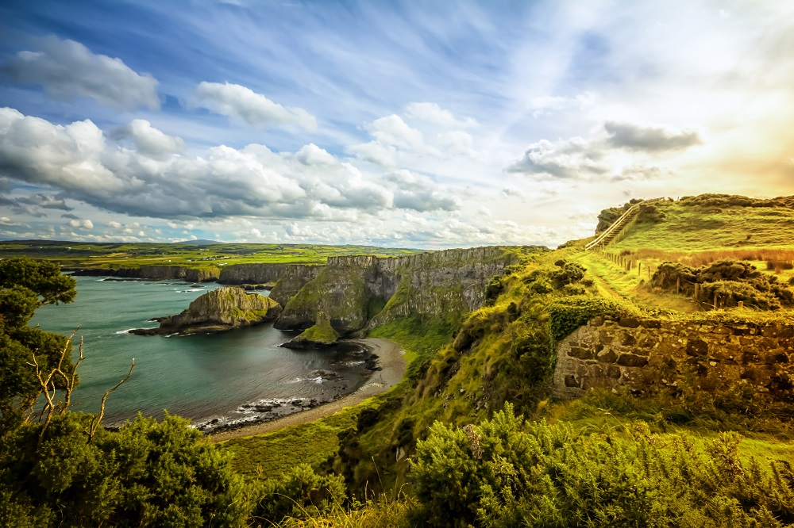
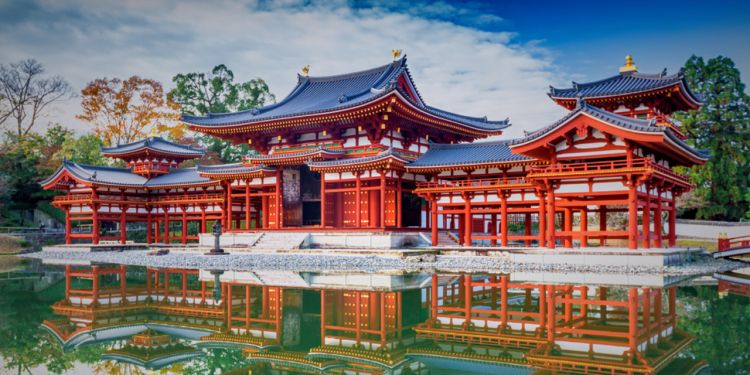
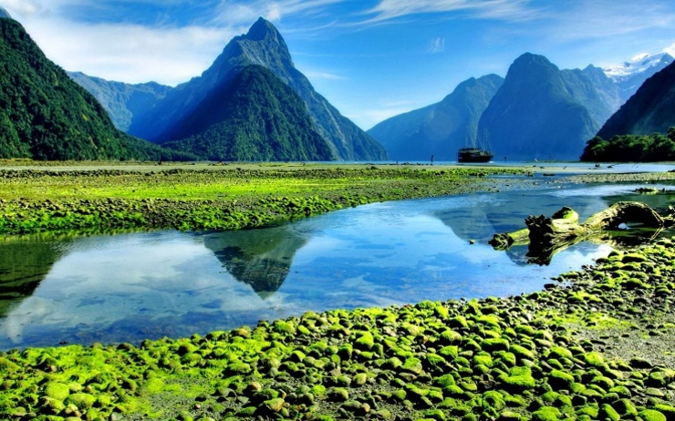
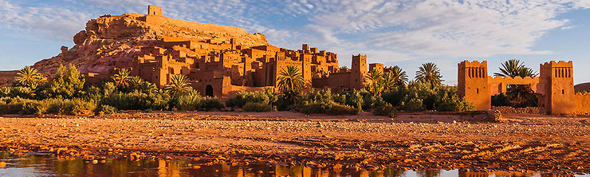
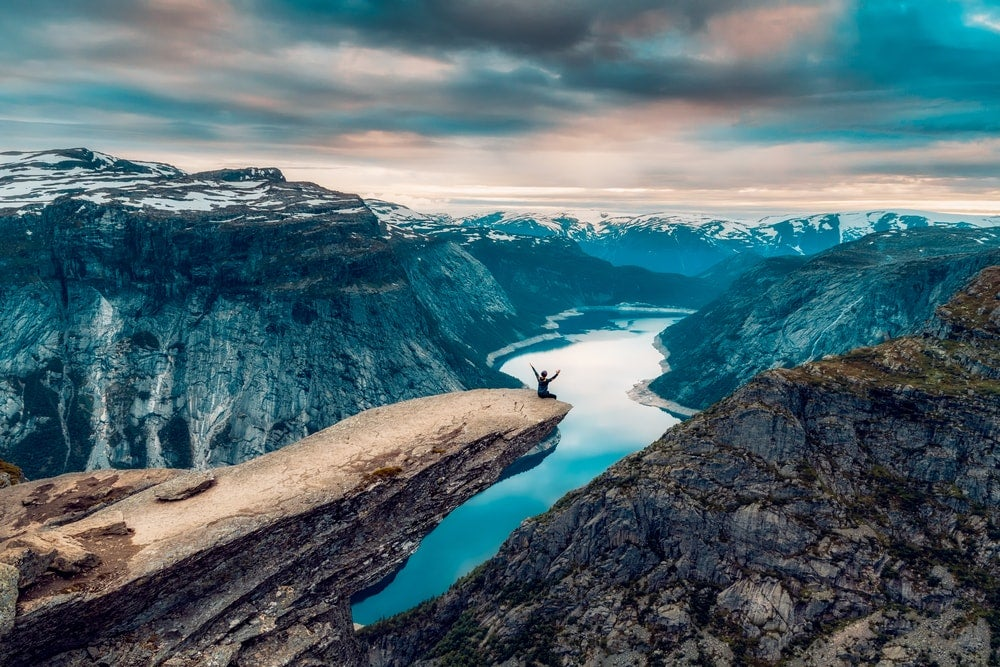

Mes voyages de rêve !
Bonjour à tous ! Je vais vous présenter ici tous les voyages que je rêve de faire !
- L'irlande, pour ses paysages magnifiques , ses sports loufoques, comme le football gaélique
( un mélange de football et de rugby), le hurling ( un mélange de hockey et de rugby) et
surtout ses Pubs mythiques
Visiter l'Irlande

- Le Japon plus précisement Kyoto qui offre quelques 2 000 temples bouddhistes dont plusieurs
sont inscrits au patrimoine mondial de l'UNESCO, ses 6852 îles et n'oublions pas qu'il est le
seul pays à avoir un empereur. Quoique le pouvoir de ce dernier soit très limité et qu’il joue
surtout un rôle symbolique, il fait toujours partie intégrante des traditions japonaises.
Visiter le Japon

- La Nouvelle-Zelande pour ses paysages divers et variés des superbes plages de sable, forêts
indigènes, montagnes, lacs, rivières et autres fjords… Et n'oublions pas qu'elle a été choisie
comme destination de tournage pour Le Seigneur des Anneaux, Le Monde de Narnia ou encore Avatar
et ce n'est pas pour rien.
Visiter la Nouvelle-Zélande

- Le Maroc pour ses souks, ses médinas, sa gastronomie, son hospitalité et la route des kasbahs
(ces petites citadelles construites en adobe, qui représentent la culture berbère et parsèment
les paysages époustouflants du Grand Sud du Maroc).
Visiter le Maroc

- La Norvège située au-dessus du cercle polaire arctique ou chaque été le soleil ne se couche
jamais ! Ce phénomène s’appelle le soleil de minuit et pendant les mois d’été,
il est visible au-dessus de l’horizon pendant 24 heures. Le soleil de minuit est
caractéristique de tous les pays scandinaves mais il dure le plus longtemps en Norvège.
ALLONS AU ICE-BAR !! C’est un bar entièrement fait de glace, murs, tables, tabourets, et
même les verres sont en glace. La température normale est de -5 ° C et à l’entrée,
vous recevez un manteau et des gants pour vous garder au chaud.
Visiter la Norvège
